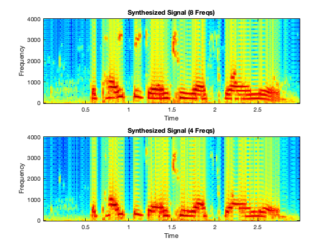
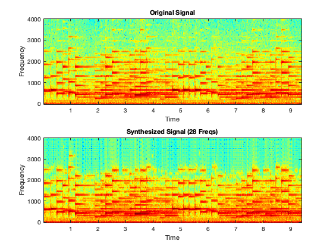

SYNTHESIZING SPEECH (PROJECT SECTION 2)
Emily Erickson
Contents
- Load in Audio (see bottom for code to record own)
- Comparing Voice Signal Synthesized With Different Numbers of Sinusoids
- How Does Synthesizing With Less Sinusoids Affect Music?
- Reducing Frame Duration to Reduce Number of Needed Sinusoids
- Listening to the Mystery Signal
- Helper Functions
- Code for Recording an Audio Snippet
Load in Audio (see bottom for code to record own)
fs = 8000;
[xx, fs] = audioread('voice.wav');
Comparing Voice Signal Synthesized With Different Numbers of Sinusoids
8 sinusoids
frameDur = 0.01; overlap = 0.005; numSines = 8; [Camps, Freqs] = sigAnalyze(xx, fs, numSines, frameDur, overlap); yy_synth_8 = sigSynth(Camps, Freqs, fs, frameDur, overlap); soundsc(yy_synth_8, fs); audiowrite("pipe8.wav", yy_synth_8,fs) pause(length(yy_synth_8)/fs); % Pause for the duration of the first signal % Comparing the spectograms of the original signal with one synthesized with 8 sinusoids subplot(2, 1, 1); specgram(xx, 256, fs); title('Original Signal'); subplot(2,1,2); specgram(yy_synth_8, 256, fs); title("Synthesized Signal (8 Freqs)"); % They have similar harmonic content in vowel regions, but audible differentices % with fricatives. % Lets repeat to see what is sounds like with only the 4 largest frequencies per % frame [~, idx] = sort(abs(Camps),2, 'descend'); % Sort by mgnitude top4Idx = idx(:, 1:4); Camps_4 = zeros(size(Camps, 1), 4); Freqs_4 = zeros(size(Freqs, 1), 4); for k = 1:size(Camps, 1) Camps_4(k, :) = Camps(k, top4Idx(k, :)); Freqs_4(k, :) = Freqs(k, top4Idx(k, :)); end yy_synth_4 = sigSynth(Camps_4, Freqs_4, fs, frameDur, overlap); soundsc(yy_synth_4, fs); audiowrite("pipe4.wav", yy_synth_4,fs) pause(length(yy_synth_4)/fs); % The audio quality is definitely worse than the original and 8 sinusoid % versions. Sounds like the speake is underwater! % Visualizing 8 vs 4 sinusoid synthesis subplot(2,1,1); specgram(yy_synth_8, 256, fs); title('Synthesized Signal (8 Freqs)'); subplot(2,1,2); specgram(yy_synth_4, 256, fs); title('Synthesized Signal (4 Freqs)');
How Does Synthesizing With Less Sinusoids Affect Music?
[xx, fs] = audioread('FurElise.wav'); soundsc(xx, fs); pause(length(xx)/fs); % Same params as for speech frameDur = 0.01; overlap = 0.005; numSines = 28; [Camps, Freqs] = sigAnalyze(xx, fs, numSines, frameDur, overlap); % I just varied the number of sinusoids like above. The fewer I used, the % worse it sounded. I found at least 28 to be necessary for the song to % sound decent. yy_synth_8 = sigSynth(Camps, Freqs, fs, frameDur, overlap); soundsc(yy_synth_8, fs); pause(length(yy_synth_8)/fs); audiowrite("elise28.wav", yy_synth_8,fs) % Here is a spectogram comparing the two: subplot(2, 1, 1); specgram(xx, 256, fs); title('Original Signal'); subplot(2,1,2); specgram(yy_synth_8, 256, fs); title("Synthesized Signal (28 Freqs)");
Warning: Data clipped when writing file.
Reducing Frame Duration to Reduce Number of Needed Sinusoids
[xx, fs] = audioread('FurElise.wav'); soundsc(xx, fs); pause(length(xx)/fs); % Same params as for speech frameDur = 0.01; overlap = 0.005; % frameDur = 0.0005; % overlap = 0.00025; numSines = 8; [Camps, Freqs] = sigAnalyze(xx, fs, numSines, frameDur, overlap); yy_synth_8 = sigSynth(Camps, Freqs, fs, frameDur, overlap); soundsc(yy_synth_8, fs); pause(length(yy_synth_8)/fs); % I played with reducing the frame duration and found that it really didn't % improve the quality of the sound for a given number of sinusoids. Our % parameters worked pretty well. Making the frame duration longer did % decrease quality.
Listening to the Mystery Signal
Load data
load('sigMystery.mat'); % amplitudes and freqs for each frame fs = 8000; % In hz frameDur = 0.008; % 8 ms overlap = 0.004; % Synthesize and play yy_mystery = sigSynth(Camps, Freqs, fs, frameDur, overlap); disp('Playing the synthesized mystery signal...'); soundsc(yy_mystery, fs); % The mystery message is "That hose can wash her feet". % View spectrogram figure; specgram(yy_mystery, 256, fs); title('Spectrogram of Synthesized Mystery Signal'); xlabel('Time (s)'); ylabel('Frequency (Hz)');
Helper Functions
Function to synthesisze signal from complex amplitudes and frequencies Camps: complex amplitudes (num frames * num sines) Freqs: frequencies (num frames * num sines) fs: sampling rate in Hz frameDur: duration of each frame in seconds overlap: duration of overlap in seconds yy: output signal
function yy = sigSynth(Camps, Freqs, fs, frameDur, overlap) L = round(frameDur * fs); % Samples per frame step = round((frameDur - overlap) * fs); % Step size between frames numFrames = size(Camps, 1); numSines = size(Camps, 2); length = step * (numFrames - 1) + L; yy = zeros(1, length); for k = 1:numFrames t = (0:L-1) / fs; % Single frame frameSignal = zeros(1,L); for n = 1:numSines frameSignal = frameSignal + real(Camps(k,n) * exp(1j*2*pi*Freqs(k,n)*t)); end % Add frame signal to output with overlap n1 = (k-1) * step + 1; n2 = n1 + L -1; yy(n1:n2) = yy(n1:n2) + frameSignal; end end % This function was supposed to come from the executable sigAnalyze.p, but was in an % outdated format that MattLab couldn't run. I put the function contract % into ChatGPT since it was beyond the project scope and this was the result % that I used throughout the lab. function [Camps, Freqs] = sigAnalyze(xx, fs, numSines, frameDur, overlap) % sigAnalyze: Analyze signal into sinusoidal components % % xx : Input signal vector % fs : Sampling rate (samples/sec) % numSines : Number of sinusoids to find per frame % frameDur : Duration of each frame (sec) % overlap : Frame overlap (sec) % % Camps : Complex amplitudes (numFrames x numSines) % Freqs : Frequencies (numFrames x numSines) % Calculate frame size and step size in samples L = round(frameDur * fs); % Frame length in samples step = round((frameDur - overlap) * fs); % Step size in samples numFrames = floor((length(xx) - L) / step) + 1; % Total number of frames % Initialize output arrays Camps = zeros(numFrames, numSines); Freqs = zeros(numFrames, numSines); % Hann window for each frame window = hann(L, 'periodic'); % Loop over each frame for k = 1:numFrames % Extract the k-th frame n1 = (k - 1) * step + 1; % Start index n2 = n1 + L - 1; % End index frame = xx(n1:n2) .* window; % Windowed frame % Compute FFT of the frame fftLength = 2^nextpow2(L); % Zero-padding for better frequency resolution X = fft(frame, fftLength); % FFT of the frame freqAxis = (0:fftLength-1) * fs / fftLength; % Frequency axis % Consider only the positive frequencies X = X(1:fftLength/2); freqAxis = freqAxis(1:fftLength/2); % Find top numSines components based on magnitude [~, idx] = maxk(abs(X), numSines); % Find indices of top magnitudes Camps(k, :) = X(idx); % Complex amplitudes Freqs(k, :) = freqAxis(idx); % Corresponding frequencies end end
Warning: Data clipped when writing file. Warning: Data clipped when writing file.
Code for Recording an Audio Snippet
fs = 8000; recorder = audiorecorder(fs, 16, 1); disp('Recording starts in 3 seconds...'); pause(3); disp('Start speaking...'); recordblocking(recorder, 2); % Record for 2 seconds disp('Recording complete.'); xx = getaudiodata(recorder, 'double'); % Get audio as double audiowrite('myVoice.wav', xx, fs);
soundsc(xx, fs); % Play what was recorded